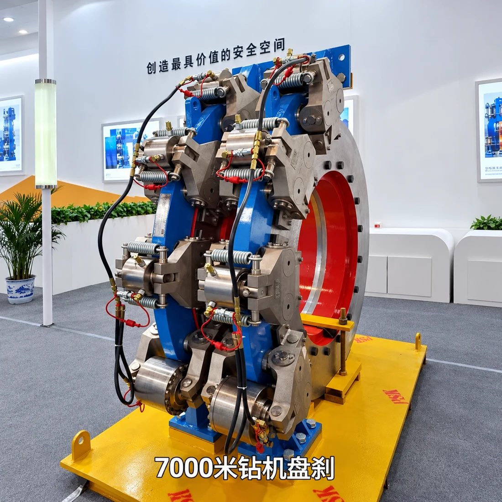
01 / MAIN BRAKESPS Hydraulic Disc Brakes
PS30 / PS40 / PS50 / PS70 / PS80 / PS90 / PS120
PS hydraulic disc brake systems are available for JC series drilling rig drawworks.
Discuss your brake model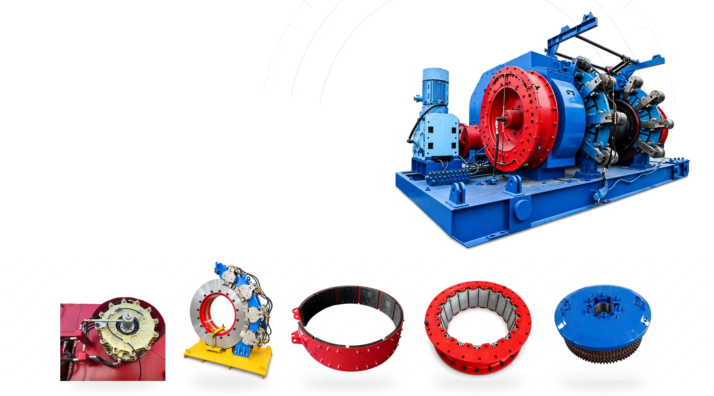
DRAWWORKS · BRAKES · CLUTCHES
Pratt Oil supplies brake and clutch products for JC series drilling rig drawworks.
We also provide band brake to disc brake conversion, installation guidance and related technical services.
COMPLETE SYSTEMS. MATCHED COMPONENTS.
JC18 to JC70 series drawworks
Main brakes, auxiliary brakes and clutches
Brake conversion and installation support
01 / PRODUCT RANGE
Pratt Oil supplies brake and clutch products for JC series drilling rig drawworks, including PS hydraulic disc brakes, band brake systems, Eaton Airflex WCB auxiliary brakes, push-type disc clutches, air-tube clutches and couplings.

01 / MAIN BRAKESPS30 / PS40 / PS50 / PS70 / PS80 / PS90 / PS120
PS hydraulic disc brake systems are available for JC series drilling rig drawworks.
Discuss your brake model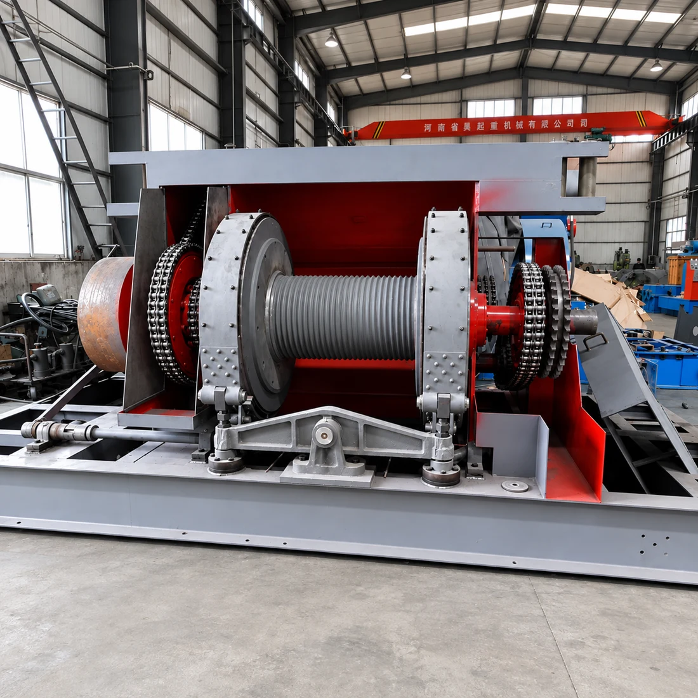
02 / MAIN BRAKESJC18 / JC21 / JC28 / JC30 / JC40 / JC50 / JC70
Available for JC series drawworks. Band brake systems can be selected according to the drawworks model and technical specifications.
Explore brake conversion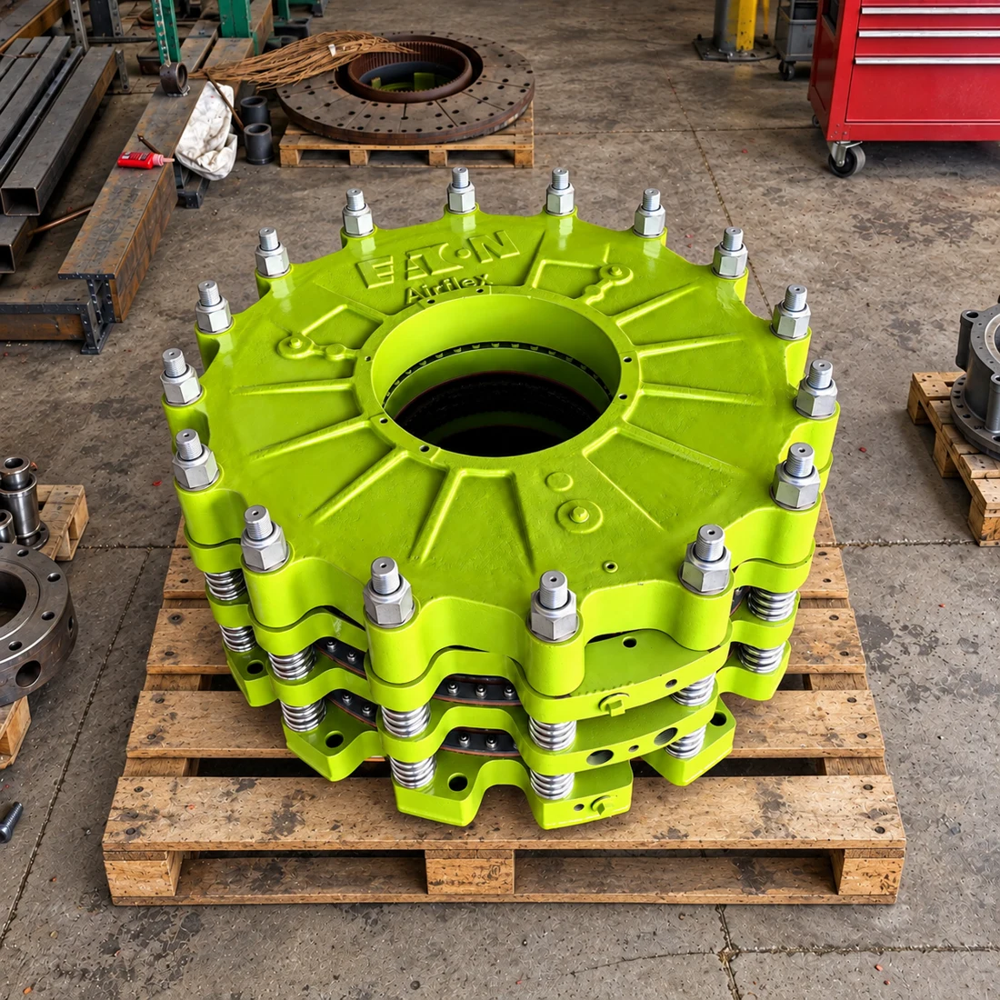
03 / AUXILIARY BRAKES124WCB / 224WCB / 324WCB / 424WCB
136WCB / 236WCB / 336WCB / 436WCB
WCB2 and WCBD configurations are also available. Products can be matched according to the brake model, nameplate or technical specifications.
Confirm your configuration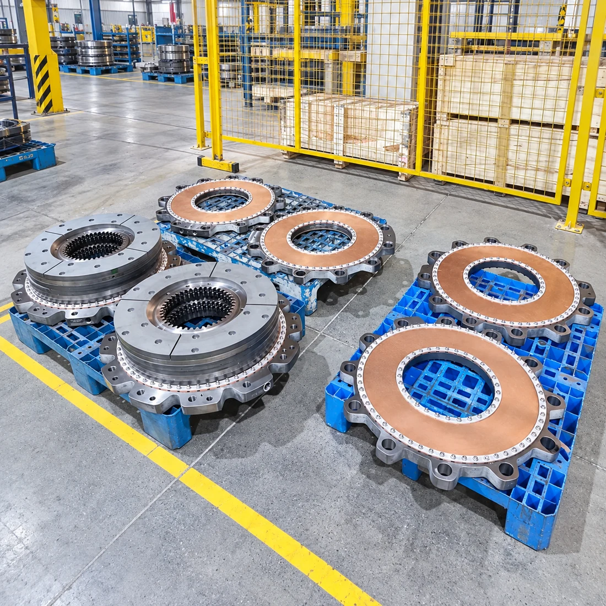
04 / CLUTCHESATD124 / ATD224 / ATD324 / ATD236 / ATD336
Push-type disc clutches are available for drilling rig drawworks and related transmission systems.
Match your clutch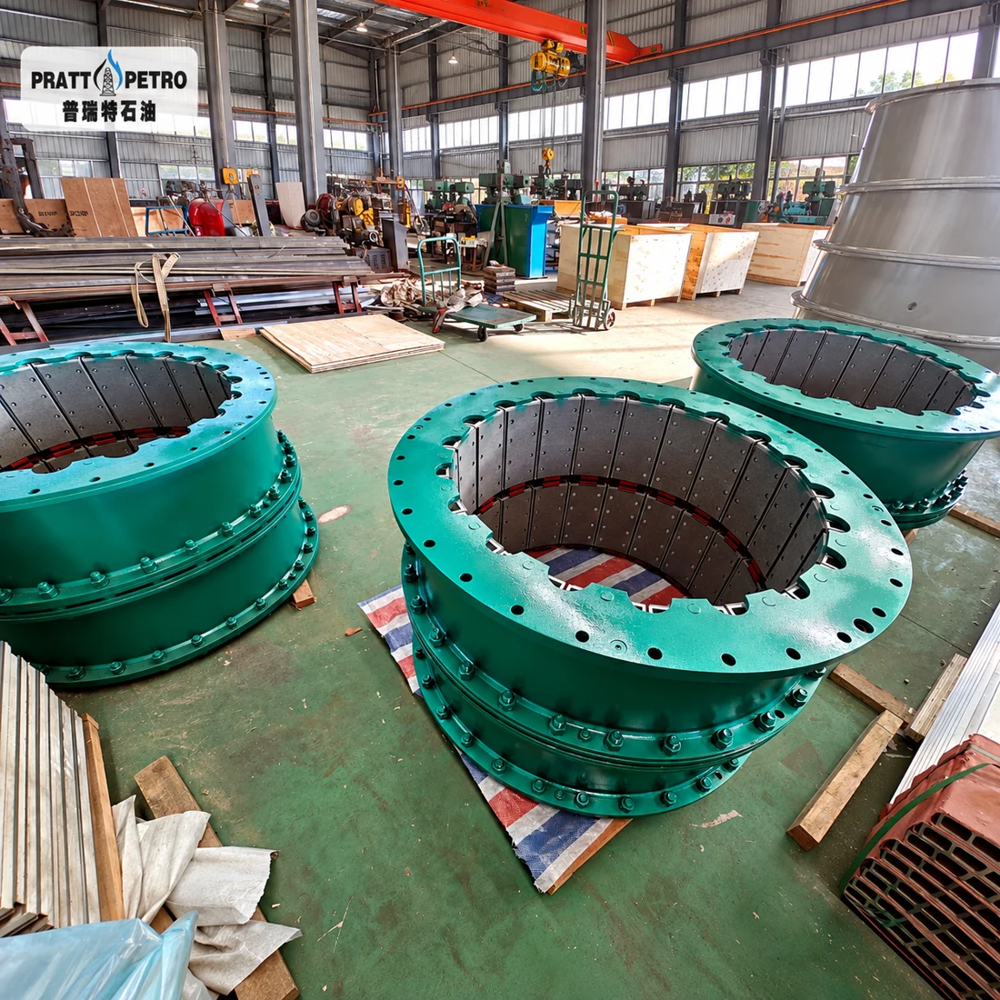
05 / CLUTCHESAirflex VC Series / Airflex CB Series
The required model can be confirmed according to the clutch nameplate, technical drawing or installation dimensions.
View all VC & CB models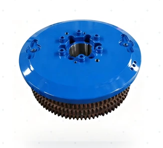
06 / CONNECTIONSJC series drawworks & system connections
Couplings are available for JC series drawworks, brake systems and clutch connections.
The correct model can be selected according to the equipment model, connection type, technical drawing or installation dimensions.
Send connection dimensionsAIR-TUBE CLUTCH MODEL REFERENCE
14VC500 / 16VC600 / 20VC600 / 24VC650 / 28VC650 / 33VC650 / 37VC650 / 42VC650
14VC1000 / 16VC1000 / 20VC1000 / 24VC1000 / 28VC1000 / 32VC1000
3CB150 / 4CB200 / 5CB200 / 6CB200 / 8CB250 / 10CB300 / 12CB350 / 14CB400
16CB500 / 18CB500 / 20CB500 / 22CB500 / 24CB500
26CB525 / 28CB525 / 30CB525 / 32CB525 / 36CB525 / 40CB525 / 45CB525
EXPLORE / EQUIPMENT & SPARE PARTS
Browse by equipment type, explore model details, then send your requirements for a matched quotation.
17 products · View details or request a quote

PS series disc brake systems and matching replacement components.


Water-cooled auxiliary brake assemblies and replacement parts.


No matching products in this category. Try All Products or another model name.
Confirm the full equipment model, part number and configuration before ordering. Need help identifying a part? Send your nameplate, drawings or photos to our team.
02 / EQUIPMENT MATCHING
Products and technical solutions can be selected according to the drawworks model, brake model, clutch model, nameplate or technical drawing.
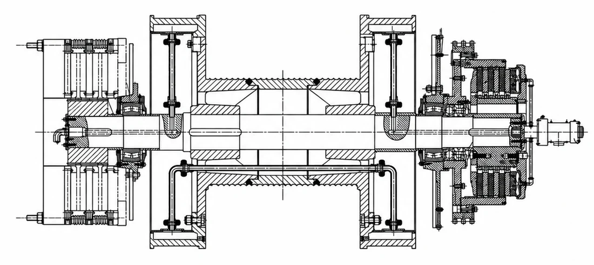
03 / CONVERSION & TECHNICAL SERVICES
Pratt Oil provides technical solutions for converting conventional drawworks band brake systems to PS hydraulic disc brake systems.
The conversion solution is prepared according to the drawworks model, existing brake structure, installation space and operating requirements.
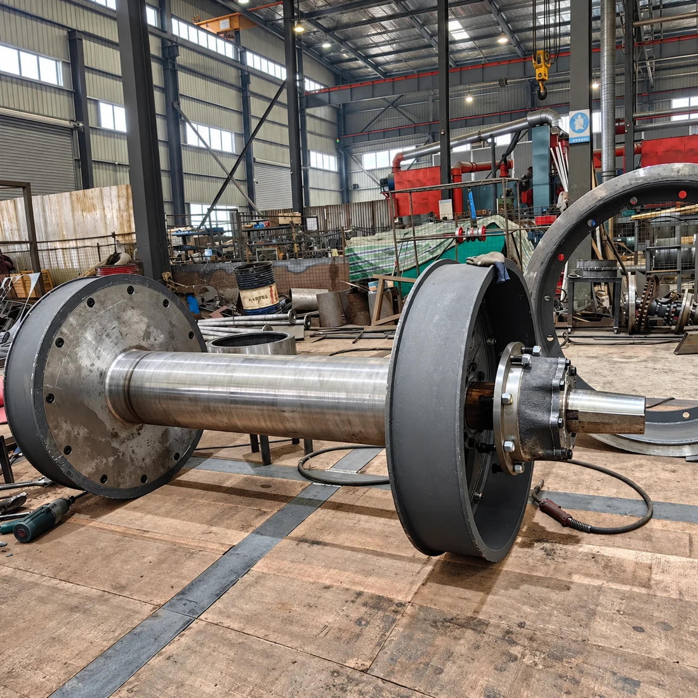
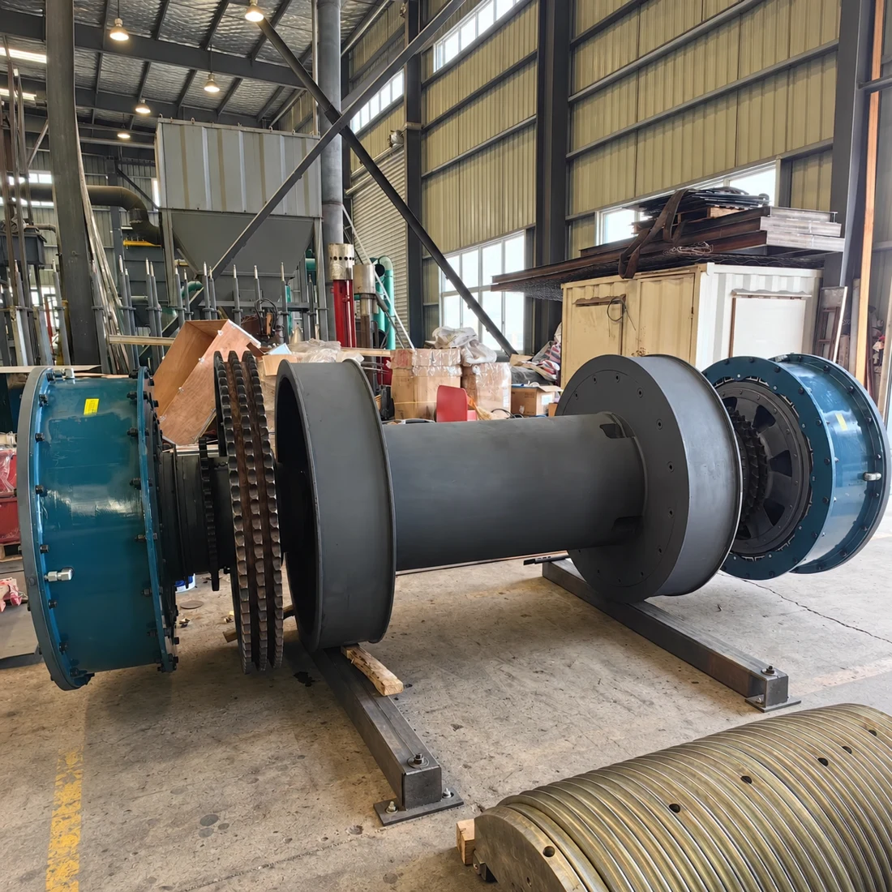
We review the existing drawworks and brake system before preparing the conversion solution.
A suitable PS hydraulic disc brake system is selected according to the drawworks model and operating requirements.
We provide brake system matching, installation layout and equipment supply for band brake to disc brake conversion.
Technical guidance is available for installation, commissioning, operation and maintenance.
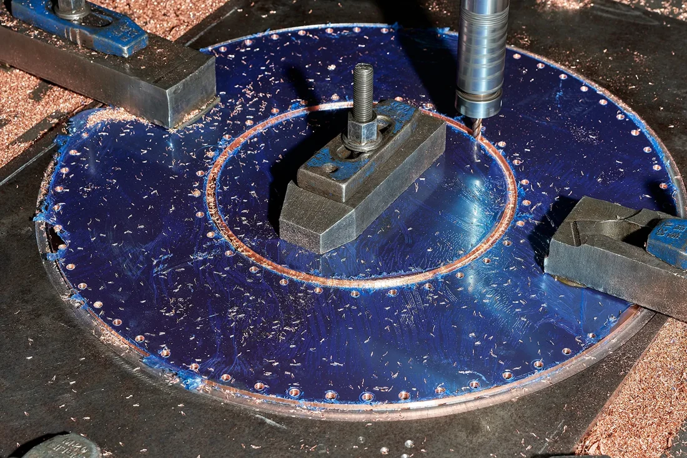
04 / SUPPLY & SUPPORT
Brake and clutch systems are selected according to the equipment model, nameplate, technical drawing and operating requirements.
We match PS hydraulic disc brakes, band brake systems, WCB auxiliary brakes and clutch systems with the corresponding equipment.
Technical assistance is available for product selection, installation, commissioning and brake system conversion.
Products are inspected according to the confirmed model, technical specifications and installation requirements before shipment.
Inspection photos, product information and packing photos can be provided when required.
PRATT OIL / YOUR TECHNICAL SUPPLY PARTNER
Pratt Oil focuses on PS hydraulic disc brakes, band brake systems, Eaton Airflex WCB auxiliary brakes, push-type disc clutches, Airflex VC and CB air-tube clutches, and couplings.
Send us the drawworks model, brake model, clutch model, nameplate or technical drawing. We will help confirm the suitable product and provide a quotation.
View Our CapabilitiesLET’S MATCH YOUR EQUIPMENT
Send us the drawworks model, brake model, clutch model, nameplate or equipment photos.
For a band brake to disc brake conversion project, please also provide photos and dimensions of the existing brake system.
Jinan Pratt Oil Equipment Co., Ltd.